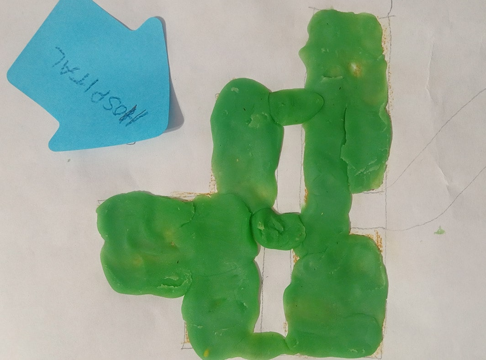
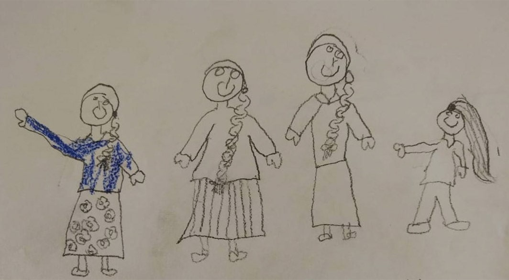
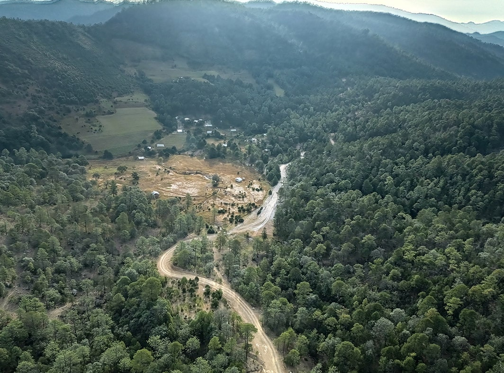
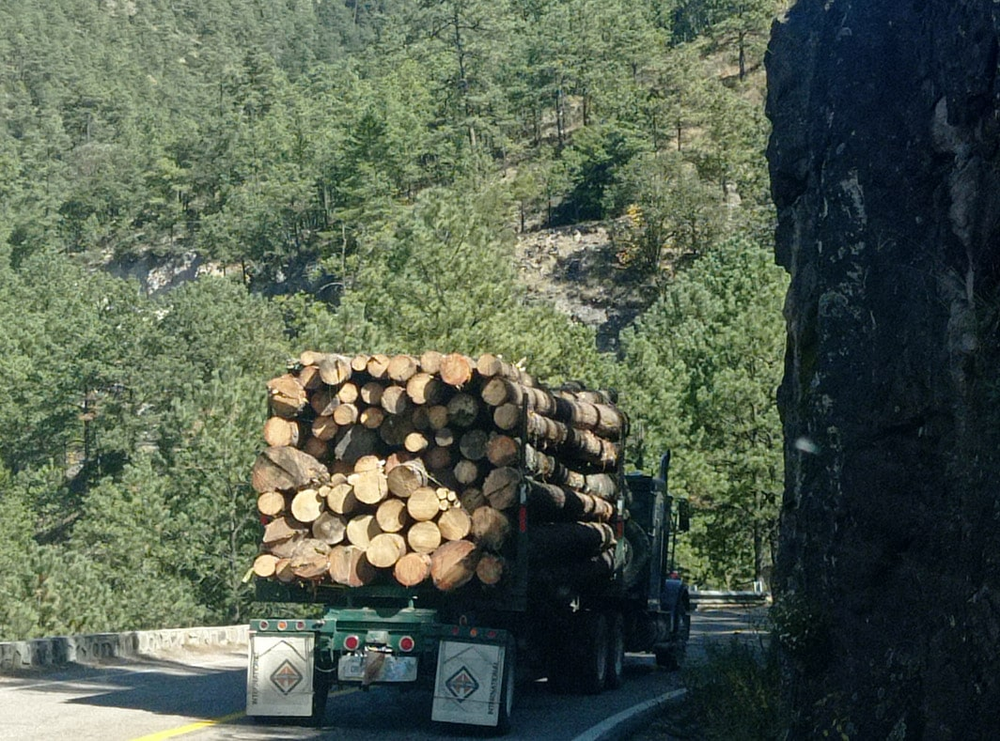
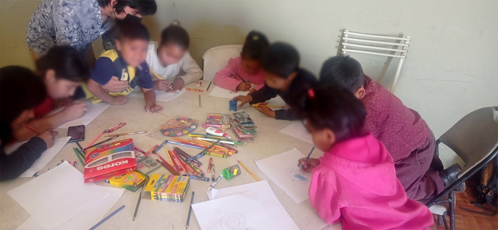
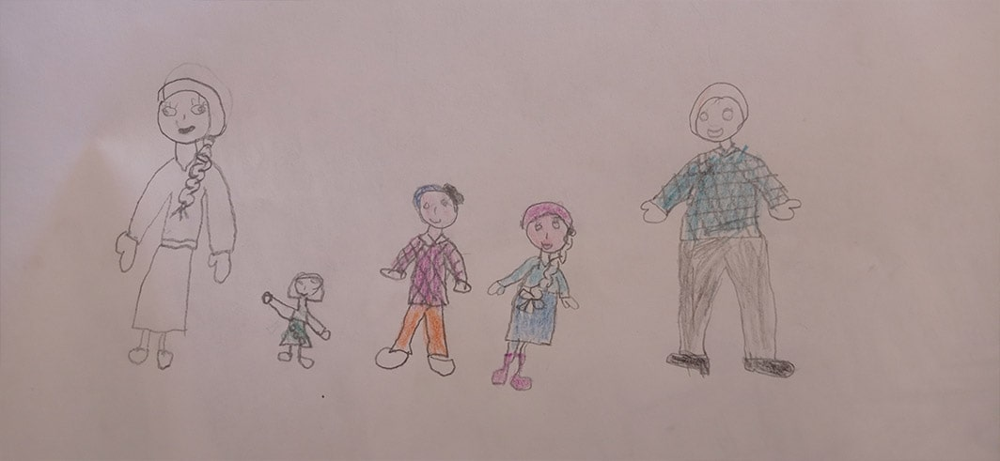
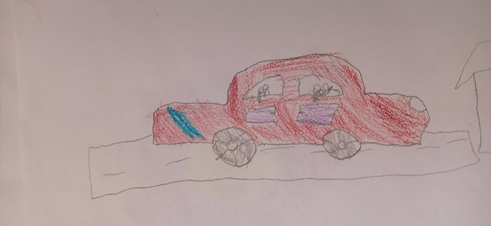

Niñas y niños del pueblo indígena Rarámuri dibujaron su territorio, el que tuvieron que abandonar en el estado de Chihuahua en el norte de México. Foto: composición realizada por Giovanni Salazar, de Agenda Propia.
Niñas y niños del pueblo indígena Rarámuri dibujaron su territorio, el que tuvieron que abandonar en el estado de Chihuahua en el norte de México. Foto: composición realizada por Giovanni Salazar, de Agenda Propia.
Niñez Rarámuri resiste al desplazamiento forzado con sus memorias vivas y tradiciones
Una veintena de niñas y niños indígenas del norte de México huyeron con sus familiares a una ciudad grande ubicada a 16 horas de distancia, porque las familias fueron amenazadas por defender su territorio de la tala ilegal y la minería.
Por: Patricia Mayorga.Nota editorial. P En esta historia se cambiarán los nombres de las niñas, los niños y sus familiares entrevistados. Tampoco se mencionará la ciudad del refugio ni de la comunidad de donde salieron para la protección de las familias desplazadas.
Celeste es una niña de 11 años del pueblo indígena Rarámuri, que dejó su tierra cuando su comunidad fue desplazada hace cuatro años por defender su territorio. Ella nació en la Sierra Tarahumara, en el municipio de Guadalupe y Calvo, en el estado de Chihuahua –norte de México– y ahora vive en un refugio de una ciudad grande del mismo estado, alejada de los altos pinos, de los ríos y de las tierras cultivadas de maíz, frijol, calabaza, chícharo, papa, tomate y chile que caracterizan los campos de su lugar de origen.
En 2016, asesinaron a Francisco, su papá, porque su familia luchaba en contra de la tala ilegal y del extractivismo. Sandra, la madre de Celeste, recuerda que el día que asesinaron a su esposo lo siguieron y él se escondió en una cueva. Desde ahí alcanzó a llamarla. Le dijo que iban por él y ya no supo más. Al día siguiente, le confirmaron que estaba muerto. Según Sandra, fue víctima de uno de los caciques que han tomado el control de la región.
Dos años más tarde asesinaron al abuelo de Celeste, Joaquín, también era reconocido por defender el territorio de la minería, por lo que su familia y otras 50 de la comunidad tuvieron que huir para salvar sus vidas.
Desde que asesinaron a Francisco, a Celeste se le agravó una enfermedad respiratoria, por lo que ha estado internada en un hospital infantil y debe permanecer conectada a un tanque de oxígeno. Cuando Celeste no está en el hospital puede realizar cualquier actividad, como bailar.
Celeste tiene dos hermanas y un hermano: Alondra, de 10 años; Carla, de 7 y Flavio, de 6, quienes recuerdan que en el rancho, en la Sierra Tarahumara, jugaban en el bosque, ayudaban a acarrear agua a su casa, a lavar y a otras labores. Vivían con su abuela Amanda, la esposa de Joaquín, quien también es desplazada.
Celeste acababa de salir del hospital cuando compartió en entrevista:
- "Salí del hospital y me dolía mucho la pierna (…) luego me sentía bien raro así, los pies”, dijo Celeste, quien llegó a dibujar y no dejaba de sonreír, de jugar y bailar.

Celeste dibujó el hospital, el cual visita de manera frecuente por una enfermedad respiratoria que padece.

En el dibujo aparecen Celeste con sus hermanas y su mamá.
El pueblo indígena Rarámuri es reconocido por su cultura de paz, por ser seminómada y caminar largas distancias de manera cotidiana, lo que ha dado como fruto atletas, hombres y mujeres, de buen rendimiento.
En todo el estado de Chihuahua se estima que habitan 130 mil indígenas, la mayoría pertenece a cuatro pueblos seminómadas originarios distribuidos así: 97 mil son del pueblo Rarámuri, 14 mil Tepehuanes u Ódami que también viven en el municipio de Guadalupe y Calvo; 890 Warijíos y 663 Pimas, según las cifras del Atlas de Pueblos Indígenas en México de 2015.
Un refugio para salvar la vida
El refugio donde ahora vive Celeste lo habitan 40 personas, la mayoría son niñas y niños entre 1 y 12 años. Por lo menos en cuatro de las familias, falta el padre porque fueron asesinados en plena lucha contra los despojos y los saqueos de sus territorios.
El lugar tiene un gran patio de tierra que las familias desplazadas han transformado con la siembra de maíz, calabaza, acelgas, frijol y otras semillas. En el refugio duermen hacinados en cuartos muy pequeños. Allí también cocinan y tratan de mantener vivas sus costumbres.
Cuando salieron desplazados Celeste tenía tan solo 7 años, hoy recuerda perfectamente el aroma de los pinos de la Sierra Tarahumara, los animales, la leña, y sobre todo las noches, así lo compartió mientras dibujaba.
Celeste y su familia dejaron la comunidad que está enclavada en una zona barranqueña que abarca 49 mil 500 hectáreas, donde habitan personas indígenas Rarámuri y Ódami que viven en 50 pequeñas y dispersas rancherías. También dejaron los cultivos, las plantas medicinales, el ganado y animales como chivos, gallinas, asnos y caballos.

La Sierra Tarahumara, es una cadena de montañas de la Sierra Madre Occidental de unos 60 mil kilómetros cuadrados con imponentes barrancas, valles y bosques. Foto: Patricia Mayorga.
Desde el refugio niñas y niños, familiares, líderes y lideresas Rarámuris se aferran a sus costumbres, lengua, vestimentas tradicionales y creencias para no olvidar sus raíces, las que les han arrebatado por el desplazamiento forzado y los distintos hechos de violencia, como crímenes de sus seres queridos.
Contexto del dolor
La tragedia para el pueblo Rarámuri inició en la década de los setenta con el asesinato de dos líderes por oponerse a la tala ilegal, según los archivos de la organización Alianza Sierra Madre (Asmac). Luego, en los años 80´s, una parte de la comunidad se desplazó a los municipios de Guadalupe y Calvo por el asesinato de otro defensor.
De nuevo en 2018 se vieron obligados a huir tras el crimen de su líder Joaquín. A él lo recuerdan en el refugio porque en varias ocasiones levantó su voz en contra de la voracidad de los caciques (como se le conoce a los mestizos que utilizan sus influencias para adueñarse de territorios) por la tala ilegal. Joaquín también alertó de la llegada de cuatro empresas mineras al territorio sin consulta previa.
Joaquín y sus compañeros de lucha presentaron las denuncias en ruedas de prensa en Chihuahua y en mesas de diálogo con instancias estatales, federales e internacionales. Al abuelo de Celeste se le recuerda porque era valiente y siempre se le veía con pantalón de mezclilla (jeans), camisa a cuadros, cinturón y huaraches elaborados de suela de llanta y baqueta.

Un camión sacando madera de la Sierra Tarahumara. Foto: Patricia Mayorga
Cuando Joaquín aún vivía, y en medio de su lucha, asesinaron a dos de sus hijos, a Francisco en 2016 y a Óscar en 2017. En 2016, también se presentó el crimen de Luis, el papá de otros tres niños del refugio. Los registros de Asmac indican que en la comunidad de Celeste y de su familia en la última década han muerto de manera violenta una docena de defensores.
Entre 2019 y 2021 otras personas dejaron sus viviendas por temor a permanecer en la región. En septiembre de 2021 se registró un ataque armado contra rancherías de la comunidad, quemaron viviendas en dos poblados y alrededor de 20 familias con niños y ancianos salieron caminando por el bosque para salvar su vida, comenta Catalina, una de las mujeres refugiadas.
Uno de los desplazados que viven en el refugio es Orlando. Él es parte del grupo de defensores que ha elevado el nivel de exigencia en tribunales agrarios y en instancias nacionales e internacionales, como la Comisión Interamericana de Derechos Humanos. Han aprendido a esquivar las amenazas contra uno y contra otro, y a superar los dolores que han dejado las muertes de sus líderes.
Orlando indica que por la intensidad de la violencia, que no ha parado desde 2018, hasta ahora se acumulan unas 80 familias desplazadas de manera forzada.
El territorio en las últimas seis décadas ha cambiado con la siembra, trasiego y disputa de drogas como la marihuana y la amapola. Esa característica la hace parte de la región conocida como “Triángulo Dorado”: el límite de tres estados (Sinaloa, Chihuahua y Durango) que ha generado grandes ingresos económicos al narcotráfico, lo cual está documentado por medios de comunicación locales, nacionales e internacionales.
Las montañas de la Sierra Tarahumara. Foto: Patricia Mayorga.
Los registros de las organizaciones que han acompañado a la comunidad -primero la Comisión de Solidaridad y Defensa de los Derechos Humanos A.C (Cosyddhac) y ahora Alianza Sierra Madre (Asmac) y el Centro de Derechos Humanos de las Mujeres (Cedehm)-, indican que se trata de una comunidad que ha resistido a las agresiones del crimen organizado y de empresas extractivistas, el abuso de autoridades municipales, estatales y federales que han apilado los casos impunes por homicidios contra defensores indígenas de la región.
Casi no me gusta vivir aquí: abuela de Celeste
La vida en el refugio avanza entre las memorias de sus familiares fallecidos y el deseo de adaptarse a la ciudad. Sin embargo, Amanda, la abuela de Celeste, que nunca había salido de la sierra, no logra acostumbrarse. Ya cumple cuatro años fuera de su comunidad, donde llevaba una vida tranquila y no le faltaba nada.
“Casi no me gusta vivir aquí. Quiero el rancho, mi rancho. Yo extraña. Extraña todo el día que estoy pensando en mi rancho. Extraña, piensa mucho. Allá me da gusto que comiendo, sembrando maíz. Tenía una casita allá, tenía de todo. Tenía de todo, estufa de leña, acarreaba en burro la leña, me gusta así. Aquí no hay vecinos casi, yo lo montaba y con machete quiere sembrar maíz, y así”,recuerda con nostalgia, con un español que está aprendiendo, pues su lengua es el rarámuri.
Amanda habla poco, pero desea compartir cómo era la vida en su tierra:
“Se levanta, cosía -la ropa-, limpiaba todo, limpiaba unos limones, cocinaba, limpiaba todo, el pinole (maíz molido que utilizan como bebida energizante, principalmente los corredores de rarámuri), había todo. Cuidaba los nietos”, comenta.
Y es que en la ciudad todo les cuesta, la leña y los alimentos que tenían en la Sierra Tarahumara. Ahora deben pagar por tenerlos.
“Aquí no sale, aquí nomás. Me siente muy triste, todo el día está triste. No le gustaría hacer algo así, no quiere acostumbrarse, quiere irse para allá a mi rancho”, indica Amanda sobre ella misma.
Retoma que conoció a su esposo Joaquín cuando eran jóvenes, los casaron por acuerdo de sus familias, como se usaba en aquella región. Sobre su esposo dice entre risas: “Era muy bonito”.
Ahora su labor es la de transmitir los conocimientos de su cultura a las niñas y niños como a Celeste, Carla, Violeta, Alondra, Flavio y sus primas y primos.
Amanda pasa sus días bordando manteles y carpetas en aros, con hilos delgados y de colores. Se ocupa de hacer comida, lavar y limpiar el lugar donde habita, a la entrada del refugio. No le gusta salir.
Niñas y niños pintan su historia que hace parte de la serie “Dibujando mi realidad, niñez indígena”, en el refugio del estado de Chihuahua. Foto: Patricia Mayorga.
Niñas del refugio ven videos en internet. Foto: Patricia Mayorga.
Niña crea nubes con plastilina y colores. Foto: Patricia Mayorga.
La lucha por recuperar la vida
Alicia, abuela de Violeta, otra de las niñas que vive en el refugio, ha acompañado la lucha de su esposo Orlando. Recuerda que junto con otras mujeres, hace más de 30 años, se organizaron para detener en la carretera los camiones cargados de troncos talados de manera ilegal. Matilde, su mamá, también era parte de ese grupo de mujeres, pero murió un día antes de la Navidad de 2021 en el refugio. La llevaron a sepultar a su comunidad.
“No estoy muy acostumbrada todavía aquí, extraño la sierra, todo lo de la sierra. Aquí la comida no es igual, no cocina uno a gusto, no tenemos más espacio, todo está muy chiquito aquí. Somos mucha familia”, expone Alicia, quien tiene 50 años.
De risa fácil y con su trenza larga y gruesa, va de un lado para otro para estar pendiente de cada niña y niño. Ella borda manteles para mesas, hace vestidos rarámuri, porque se empeña en conservar su cultura y tradiciones para sus nietos y otros niños del refugio.
A Alicia le preocupa que las niñas y niños estén perdiendo las costumbres de los ranchos, como sembrar el maíz, como escarbar, como beneficiarlos.
“Aquí en la ciudad no tienen los niños dónde correr, dónde vean personas trabajando, no saben cómo arrimar una piedra para retener el agua, retener la tierra más bien. Los niños tienen que aprender a acomodar una piedra, ponerla de lado para retener la tierra, para retener las hojas de los árboles que se caen, eso sirve de fertilizante en la tierra, Entonces, los niños ahí tienen que aprender los trabajos que hacíamos antes, cuando nosotros estábamos chiquitos. Nuestra mamá nos enseñó a nosotros también, a nosotros nos toca enseñarles a los nietos”, refiere Alicia.
Agrega que en la ciudad es difícil porque no tienen terreno para sembrar, ni el agua suficiente para regar las plantas.
“Por ejemplo, en la Semana Santa, los niños no saben qué fiesta hacen allá en los ranchos, no saben qué comida comen en los ranchos, todo eso tienen que aprender y aquí no hacemos la comida que es común en Semana Santa”, agrega Alicia.
El pasado 12 de diciembre hicieron la fiesta y bailaron matachín (baile de agradecimiento a onorúame) como lo hacen en su tierra. “Yo sentí que para los niños fue como qué le dijera yo, que vieran qué es lo que se hace allá, como una muestra de lo que es la fiesta allá. Yo los veía contentos porque todos bailaron. Agarraron cada quien su sonajita, su coronita y a bailar”.
Por su parte, Orlando comparte la preocupación de su esposa. “Van a perder la costumbre de sembrar el maíz, el frijol, las calabazas, el chícharo y el trigo, lo que siembra uno en la sierra, porque aquí se siembra, pero muy poco”.
Y es que en el refugio han logrado sembrar y practicar un poco de sus tradiciones para que los niñas y niños aprendan de su propia cultura.
“Cuando sembramos, los niños me ayudan, todos andan ahí cuando andamos comprando maíz. Los más grandes vivieron en la sierra, los otros se vinieron muy chiquitos, por eso sembramos aquí para que a los niños no se les olvide”.
Los mayores hablan con los niños y las niñas sobre los vestidos, las mujeres los cosen para no perder la tradición. Les hablan lo más que pueden en rarámuri para enseñarles lo poco que se puede. “No es como estar en la sierra, allá los lleva uno al monte, ahí anda uno con una (yunta de bueyes), con las bestias anda barbechando y aquí se puede sembrar nada más en mayo o primeros de junio”.

La familia de Violeta, con su papá a un lado.

Violeta dibuja a su familia con su papá manejando un carro.
Matachines, el baile de agradecimiento a onorúame
Después de tres años de vivir en el refugio, la comunidad no había bailado el ritual de agradecimiento a onorúame con el que piden por la vida, para que en el año no falte el agua, el ganado, los alimentos y la salud.
El 12 de diciembre de 2021 realizaron el ritual en el refugio. Celeste, Violeta, sus primas y primos, no dejaron de bailarle a la virgen durante toda la noche, recuerda Alicia.
Alicia explica que al ritual le llaman tónare y danzaron matachín, para ofrecerlo a onorúame (así le dicen a Dios los rarámuri) y a la virgen. En cada región de la Tarahumara varía el ritmo de la música con la que bailan. Ponen una cruz al frente, rodeada de flores y comida como ofrenda: tesgüino (bebida de maíz fermentado) y tortillas de maíz.
Un hombre o una mujer a quien llaman mayordomo o mayordoma son los que dirigen la danza. Se colocan en la cabeza una corona de listones de colores que cuelgan sobre hombros y espalda, llevan sonajas en sus manos y algunos en sus pies. Bailan toda la noche y continúan al día siguiente.
Son una cultura muy alegre y colorida. Para la comunidad no hacer el tónare (en otras regiones se llama yúmare) y bailar matachín es motivo de tristeza porque lo hacen para pedir por la vida, por la salud, por sus animales y para que no falte agua.
En esta ocasión hicieron el tónare el 12 de diciembre, día de la Virgen de Guadalupe en México. Un grupo de música de su tierra llegó y les amenizó la danza para bailar a la Guadalupana.
Las niñas, niños y adultos salieron con sus mejores vestidos, zapatos y peinados. En la misma ciudad hay otra comunidad desplazada de otro municipio de la Sierra Tarahumara y el día de la fiesta les prestaron las coronas con listones de colores para bailar porque ellos ya habían realizado un yúmare.
Previamente cocinaron un chivo e hicieron la comida tradicional. En una olla grande prepararon en leña el chivo con papas, tomate, cebolla y otras verduras. Acompañaron el platillo con arroz rojo y tortillas de maíz gruesas. Una semana antes comenzaron a fermentar el maíz para hacer el tesgüino, una bebida de la Sierra Tarahumara.
Cuando salieron desplazados de su tierra, algunos de los niños y niñas apenas caminaban, otros aún no habían nacido. Era la primera vez que bailaban su fiesta tradicional, pero sin dificultad llevaron el paso toda la noche. Estaban felices.
Celeste vive su adolescencia en el refugio con sus hermanas, quienes han heredado la sonrisa permanente de Sandra, su mamá. En su empeño por aferrarse a la vida y arraigarse a la nueva tierra que la recibió, Celeste planea estudiar en una escuela para conocer a más personas y comienza a ir a conciertos de artistas locales, también espera algún día volver a la Sierra Tarahumara y ver la cadena de montañas y los altos pinos de su comunidad.
Los cañones en las barrancas de la Sierra Tarahumara. Foto: Patricia Mayorga.
Nota. Esta historia hace parte de la serie periodística Dibujando mi realidad, #NiñezIndígena en América Latina, cocreada con niños, niñas, periodistas y comunicadores indígenas y no indígenas de la Red Tejiendo Historias (Rede Tecendo Histórias), bajo la coordinación editorial del medio independiente Agenda Propia.